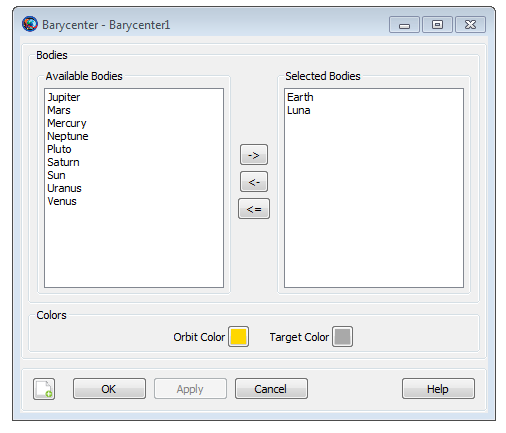
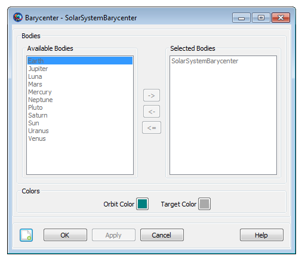
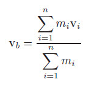

Barycenter
Barycenter — The center of mass of selected celestial bodies
Description
A Barycenter is the center of mass of a set of celestial bodies. GMAT contains two barycenter resources: a built-in SolarSystemBarycenter resource and the Barycenter resource that allows you to build a custom Barycenter such as the Earth-Moon barycenter. This resource cannot be modified in the Mission Sequence.
See Also: LibrationPoint, CoordinateSystem, CelestialBody, SolarSystem, Color
Fields
| Field | Description | ||||||||||||
|---|---|---|---|---|---|---|---|---|---|---|---|---|---|
| BodyNames | The list of CelestialBody resources included in the Barycenter. Providing empty brackets sets the bodies to the default list described below.
| ||||||||||||
| OrbitColor | Allows you to set available colors on user-defined
Barycenter object orbits. The barycenter
orbits are drawn using the OrbitView graphics
resource. Colors on Barycenter object can be
set through a string or an integer array. For example: Setting a
barycenter's orbit color to red can be done in the following two
ways:
| ||||||||||||
| TargetColor | Allows you to select available colors for
Barycenter object's perturbing orbital
trajectories that are drawn during iterative processes such as
Differential Correction or Optimization. The target color can be
identified through a string or an integer array. For example:
Setting a barycenter's perturbing trajectory color to yellow can
be done in following two ways:
|
GUI
|  |
The dialog box allows you to define the celestial bodies included in a custom . All celestial bodies, including user-defined bodies, are available for use in a and appear in either the list or the list. The example above illustrates the default configuration which contains and .
|  |
The dialog box shown above is a built-in object and you cannot modify its configuration. See the Remarks section for details regarding the model for the .
Remarks
Built-in SolarSystemBarycenter Object
The built-in SolarSystemBarycenter is modelled using the ephemerides selected in the SolarySystem.EphemerisSource field. For example, if you select DE421 for SolarSystem.EphemerisSource, then the barycenter location is computed by calling the DE421 ephemeris routines. For DE and SPICE ephemerides, the model for the solar system barycenter includes the planets and several hundred minor planets and asteroids. Note that you cannot add bodies to the SolarSystemBarycenter.
Custom Barycenter Objects
You can create a custom barycenter using the Barycenter resource. The position and velocity of a Barycenter is a mass-weighted average of the position and velocity of the included celestial bodies. In the equations below mi, ri, and vi are respectively the mass, position, and velocity of the ith body in the barycenter, and rb and vb are respectively the position and velocity of the barycenter.
 |
|  |
Setting Colors On Barycenter Orbits
GMAT allows you to assign colors to barycenter orbits that are drawn using the OrbitView graphics resource. GMAT also allows you to assign colors to perturbing barycenter orbital trajectories which are drawn during iterative processes such as differential correction or optimization. The Barycenter object's OrbitColor and TargetColor fields are used to assign colors to both orbital and perturbing trajectories. See the Fields section to learn more about these two fields. Also see Color documentation for discussion and examples on how to set colors on a barycenter orbit.
Examples
Define the state of a spacecraft in SolarSystemBarycenter coordinates.
Create CoordinateSystem SSB
SSB.Origin = SolarSystemBarycenter
SSB.Axes = MJ2000Eq
Create ReportFile aReport
Create Spacecraft aSpacecraft
aSpacecraft.CoordinateSystem = SSB
aSpacecraft.X = -27560491.88656896
aSpacecraft.Y = 132361266.8009069
aSpacecraft.Z = 57419875.95483227
aSpacecraft.VX = -29.78491261798486
aSpacecraft.VY = 2.320067257851091
aSpacecraft.VZ = -1.180722388963864
BeginMissionSequence
Report aReport aSpacecraft.EarthMJ2000Eq.X aSpacecraft.EarthMJ2000Eq.Y ...
aSpacecraft.EarthMJ2000Eq.Z Report the state of a spacecraft in SolarSystemBarycenter coordinates.
Create CoordinateSystem SSB
SSB.Origin = SolarSystemBarycenter
SSB.Axes = MJ2000Eq
Create Spacecraft aSpacecraft
Create ReportFile aReport
BeginMissionSequence
Report aReport aSpacecraft.SSB.X aSpacecraft.SSB.Y aSpacecraft.SSB.Z ...
aSpacecraft.SSB.VX aSpacecraft.SSB.VY aSpacecraft.SSB.VZCreate an Earth-Moon Barycenter and use it in a Sun-Earth-Moon LibrationPoint.
Create Barycenter EarthMoonBary
EarthMoonBary.BodyNames = {Earth,Luna}
Create LibrationPoint SunEarthMoonL2
SunEarthMoonL2.Primary = Sun
SunEarthMoonL2.Secondary = EarthMoonBary
SunEarthMoonL2.Point = L2
Create CoordinateSystem SEML2Coordinates
SEML2Coordinates.Origin = SunEarthMoonL2
SEML2Coordinates.Axes = MJ2000Eq
Create Spacecraft aSpacecraft
GMAT aSpacecraft.DateFormat = UTCGregorian
GMAT aSpacecraft.Epoch = '09 Dec 2005 13:00:00.000'
GMAT aSpacecraft.CoordinateSystem = SEML2Coordinates
GMAT aSpacecraft.X = -32197.88223741966
GMAT aSpacecraft.Y = 211529.1500044117
GMAT aSpacecraft.Z = 44708.57017366499
GMAT aSpacecraft.VX = 0.03209516489451751
GMAT aSpacecraft.VY = 0.06086386504053736
GMAT aSpacecraft.VZ = 0.0550442738917212
Create ReportFile aReport
BeginMissionSequence
Report aReport aSpacecraft.EarthMJ2000Eq.X aSpacecraft.EarthMJ2000Eq.Y ...
aSpacecraft.EarthMJ2000Eq.Z